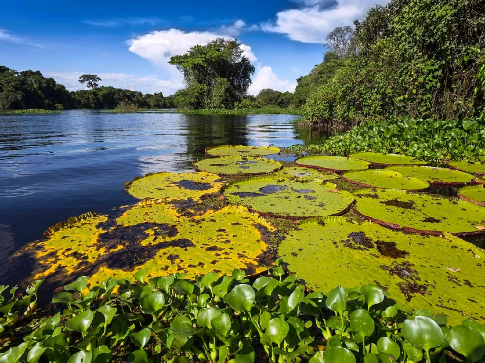

O Rondônia é um estado localizado na região Norte do Brasil, conhecido por sua grande diversidade natural e pela presença da Floresta Amazônica. Sua capital é Porto Velho, importante centro econômico e cultural do estado. Rondônia possui uma economia baseada na agropecuária, na agricultura, na mineração e na geração de energia hidrelétrica. O estado também é cortado por rios importantes, como o Rio Madeira, que tem grande importância para o transporte e para a produção de energia. A cultura rondoniense é marcada pela mistura de tradições indígenas e influências de migrantes vindos de várias regiões do país.

Voltar